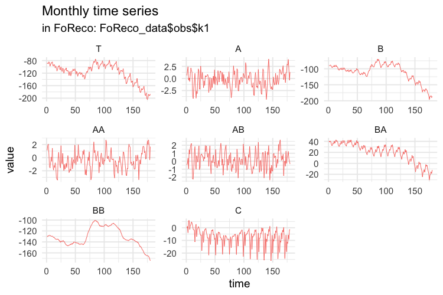
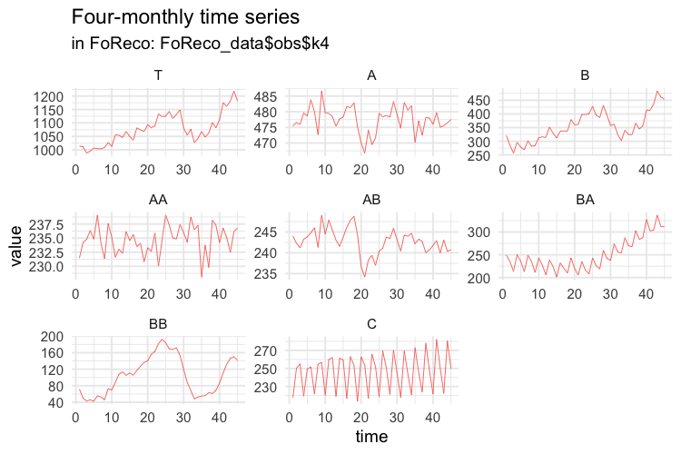
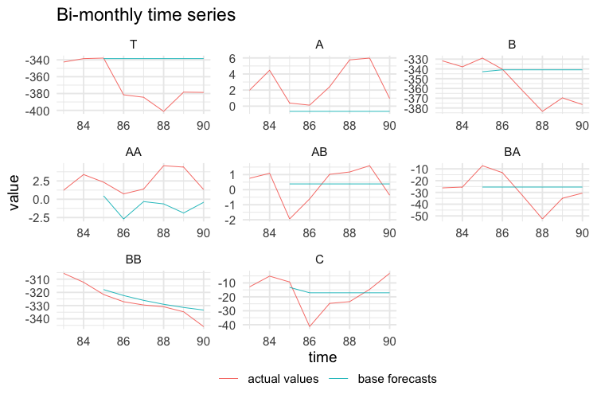
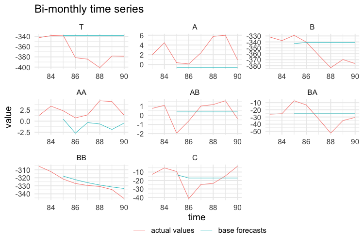

Using the FoReco package for cross-sectional, temporal and cross-temporal point forecast reconciliation
Source: vignettes/FoReco_package.Rmd
FoReco_package.RmdThe FoReco (Forecast Reconciliation) package is designed for point forecast reconciliation, a post-forecasting process aimed to improve the quality of the base forecasts for a system of linearly constrained (e.g. hierarchical/grouped) time series.
It offers classical (bottom-up), optimal and heuristic combination forecast reconciliation procedures by exploiting cross-sectional, temporal, and cross-temporal relationships linking the time series.
What are the most important functions?
The main functions are:
-
htsrec(): cross-sectional (contemporaneous) forecast reconciliation. -
thfrec(): forecast reconciliation for a single time series through temporal hierarchies. -
tcsrec(): heuristic first-temporal-then-cross-sectional cross-temporal forecast reconciliation (Kourentzes and Athanasopoulos, 2019). -
cstrec(): heuristic first-cross-sectional-then-temporal cross-temporal forecast reconciliation. -
iterec(): heuristic iterative cross-temporal forecast reconciliation. -
octrec(): optimal cross-temporal forecast reconciliation.
Installation
You can install the stable version on R CRAN.
install.packages('FoReco', dependencies = TRUE)
You can also install the development version from Github
# install.packages("devtools") devtools::install_github("daniGiro/FoReco")
Example: cross-temporal data
A two-level hierarchy with \(n = 8\) monthly time series. In the cross-sectional framework, at any time it is \(Tot = A + B + C\), \(A = AA + AB\) and \(B = BA + BB\) (\(nb = 5\) at the bottom level). For monthly data, the observations are aggregated to annual \((k = 12)\), semi-annual \((k = 6)\), four-monthly \((k = 4)\), quarterly \((k = 3)\), and bi-monthly \((k = 2)\) observations. The monthly bottom time series are simulated from five different SARIMA models. There are 180 monthly observations (15 years): the first 168 values (14 years) are used as training set, and the last 12 form the test set.

Cross-sectional hierarchy
Simulation
In the following script we simulate five independent monthly bottom time series, each of length 180 (15 complete years of monthly data).
library(FoReco) library(forecast) library(sarima) values <- NULL base <- NULL residuals <- NULL test <- NULL bottom <- matrix(NA, nrow = 180, ncol = 5) # Model definition bts <- list() #ARIMA(1,0,0)(0,0,0)[12] bts[[1]] <- list(ar=0.7, nseasons=12) #ARIMA(0,0,1)(0,0,0)[12] bts[[2]] <- list(ma=0.4, nseasons=12) #ARIMA(0,1,1)(0,1,1)[12] bts[[3]] <- list(ma=0.2, sma=0.1, iorder=1, siorder=1, nseasons=12) #ARIMA(2,1,0)(0,0,0)[12] bts[[4]] <- list(ar=c(0.2,0.7), iorder=1, nseasons=12) #ARIMA(2,0,0)(0,1,1)[12] bts[[5]] <- list(ar=c(0.65,0.15), sma=0.5, siorder=1, nseasons=12) mm <- c(11.21, 5.32, 5.63, 11.09, 5.97) set.seed(1498) for(i in 1:5){ bottom[,i] <- sim_sarima(n=180, model = bts[[i]], n.start = 200, mean=mm[i]) } colnames(bottom) <- c("AA", "AB", "BA", "BB", "C") C <- matrix(c(rep(1,5), rep(1,2), rep(0,3), rep(0,2), rep(1,2), 0), byrow = TRUE, nrow = 3) upper <- bottom%*%t(C) colnames(upper) <- c("T", "A", "B") values$k1 <- ts(cbind(upper, bottom), frequency = 12) colnames(values$k1) <- c("T", "A", "B", "AA", "AB", "BA", "BB", "C")
More precisely, AA is simulated from an AR(1) process, AB from an MA(1), BA from an ARIMA(0,1,1)(0,1,1), BB from an ARIMA(2,1,0), and C from an ARIMA(2,0,0)(0,1,1). The higher levels series in the hierarchy (T,A,B) are obtained by simple summation of the five bottom time series.
Then we compute the temporally aggregated series at annual \((k = 12)\), semi-annual \((k = 6)\), four-monthly \((k = 4)\), quarterly \((k = 3)\), and bi-monthly \((k = 2)\) frequencies. The first 14 years of each simulated series are used as training set, and the last year as test set. The forecasts are obtained using the auto.arima function of the forecast package (Hyndman et al., 2020).
# 12 MONTHLY FORECASTS base$k1 <- matrix(NA, nrow = 12, ncol = ncol(values$k1)) residuals$k1 <- matrix(NA, nrow = 168, ncol = ncol(values$k1)) for (i in 1:ncol(values$k1)) { train <- values$k1[1:168, i] forecast_arima <- forecast(auto.arima(train), h = 12) base$k1[, i] <- forecast_arima$mean residuals$k1[, i] <- forecast_arima$residuals } base$k1 <- ts(base$k1, frequency = 12, start = c(15, 1)) colnames(base$k1) <- c("T", "A", "B", "AA", "AB", "BA", "BB", "C") residuals$k1 <- ts(residuals$k1, frequency = 12) colnames(residuals$k1) <- c("T", "A", "B", "AA", "AB", "BA", "BB", "C") test$k1 <- values$k1[-c(1:168), ]

# 6 BI-MONTHLY FORECASTS values$k2 <- ts(apply(values$k1, 2, function(x) colSums(matrix(x, nrow = 2))), frequency = 6) base$k2 <- matrix(NA, nrow = 6, ncol = ncol(values$k2)) residuals$k2 <- matrix(NA, nrow = 84, ncol = ncol(values$k2)) for (i in 1:ncol(values$k2)) { train <- values$k2[1:84, i] forecast_arima <- forecast(auto.arima(train), h = 6) base$k2[, i] <- forecast_arima$mean residuals$k2[, i] <- forecast_arima$residuals } base$k2 <- ts(base$k2, frequency = 6, start = c(15, 1)) colnames(base$k2) <- c("T", "A", "B", "AA", "AB", "BA", "BB", "C") residuals$k2 <- ts(residuals$k2, frequency = 6) colnames(residuals$k2) <- c("T", "A", "B", "AA", "AB", "BA", "BB", "C") test$k2 <- values$k2[-c(1:84), ]

# 4 QUARTERLY FORECASTS values$k3 <- ts(apply(values$k1, 2, function(x) colSums(matrix(x, nrow = 3))), frequency = 4) base$k3 <- matrix(NA, nrow = 4, ncol = ncol(values$k3)) residuals$k3 <- matrix(NA, nrow = 56, ncol = ncol(values$k3)) for (i in 1:ncol(values$k3)) { train <- values$k3[1:56, i] forecast_arima <- forecast(auto.arima(train), h = 4) base$k3[, i] <- forecast_arima$mean residuals$k3[, i] <- forecast_arima$residuals } base$k3 <- ts(base$k3, frequency = 4, start = c(15, 1)) colnames(base$k3) <- c("T", "A", "B", "AA", "AB", "BA", "BB", "C") residuals$k3 <- ts(residuals$k3, frequency = 4) colnames(residuals$k3) <- c("T", "A", "B", "AA", "AB", "BA", "BB", "C") test$k3 <- values$k3[-c(1:56), ]

# 3 FOUR-MONTHLY FORECASTS values$k4 <- ts(apply(values$k1, 2, function(x) colSums(matrix(x, nrow = 4))), frequency = 3) base$k4 <- matrix(NA, nrow = 3, ncol = ncol(values$k4)) residuals$k4 <- matrix(NA, nrow = 42, ncol = ncol(values$k4)) for (i in 1:ncol(values$k4)) { train <- values$k4[1:42, i] forecast_arima <- forecast(auto.arima(train), h = 3) base$k4[, i] <- forecast_arima$mean residuals$k4[, i] <- forecast_arima$residuals } base$k4 <- ts(base$k4, frequency = 3, start = c(15, 1)) colnames(base$k4) <- c("T", "A", "B", "AA", "AB", "BA", "BB", "C") residuals$k4 <- ts(residuals$k4, frequency = 3) colnames(residuals$k4) <- c("T", "A", "B", "AA", "AB", "BA", "BB", "C") test$k4 <- values$k4[-c(1:42), ]

# 2 SEMI-ANNUAL FORECASTS values$k6 <- ts(apply(values$k1, 2, function(x) colSums(matrix(x, nrow = 6))), frequency = 2) base$k6 <- matrix(NA, nrow = 2, ncol = ncol(values$k6)) residuals$k6 <- matrix(NA, nrow = 28, ncol = ncol(values$k6)) for (i in 1:ncol(values$k6)) { train <- values$k6[1:28, i] forecast_arima <- forecast(auto.arima(train), h = 2) base$k6[, i] <- forecast_arima$mean residuals$k6[, i] <- forecast_arima$residuals } base$k6 <- ts(base$k6, frequency = 2, start = c(15, 1)) colnames(base$k6) <- c("T", "A", "B", "AA", "AB", "BA", "BB", "C") residuals$k6 <- ts(residuals$k6, frequency = 2) colnames(residuals$k6) <- c("T", "A", "B", "AA", "AB", "BA", "BB", "C") test$k6 <- values$k6[-c(1:28), ]

# 1 ANNUAL FORECAST values$k12 <- ts(apply(values$k1, 2, function(x) colSums(matrix(x, nrow = 12))), frequency = 1) base$k12 <- matrix(NA, nrow = 1, ncol = ncol(values$k12)) residuals$k12 <- matrix(NA, nrow = 14, ncol = ncol(values$k12)) for (i in 1:ncol(values$k12)) { train <- values$k12[1:14, i] forecast_arima <- forecast(auto.arima(train), h = 1) base$k12[, i] <- forecast_arima$mean residuals$k12[, i] <- forecast_arima$residuals } base$k12 <- ts(base$k12, frequency = 1, start = c(15, 1)) colnames(base$k12) <- c("T", "A", "B", "AA", "AB", "BA", "BB", "C") residuals$k12 <- ts(residuals$k12, frequency = 1) colnames(residuals$k12) <- c("T", "A", "B", "AA", "AB", "BA", "BB", "C") test$k12 <- values$k12[-c(1:14), ]

base <- t(do.call(rbind, rev(base))) res <- t(do.call(rbind, rev(residuals))) test <- t(do.call(rbind, rev(test))) kset <- c(12, 6, 4, 3, 2, 1) h <- 1 colnames(base) <- paste("k", rep(kset, h * rev(kset)), "_h", do.call("c", as.list(sapply( rev(kset) * h, function(x) seq(1:x)))), sep = "") colnames(test) <- paste("k", rep(kset, h * rev(kset)), "_h", do.call("c", as.list(sapply( rev(kset) * h, function(x) seq(1:x)))), sep = "") h <- 14 colnames(res) <- paste("k", rep(kset, h * rev(kset)), "_h", do.call("c", as.list(sapply( rev(kset) * h, function(x) seq(1:x)))), sep = "") colnames(C) <- c("AA", "AB", "BA", "BB", "C") rownames(C) <- c("Tot", "A", "B") obs <- values FoReco_data <- list(base = base, test = test, res = res, C = C, obs = obs)
The following plots show the actual values and the forecasts for the test year at any temporal aggregation level.  



Reconciliation
- Cross-sectional reconciliation for all temporal aggregation levels (monthly, bi-monthly, …, annual) using MinT-shr (Wickramasuriya et al., 2019)
K <- c(1,2,3,4,6,12) hts_recf_list <- NULL for(i in 1:length(K)){ # base forecasts id <- which(simplify2array(strsplit(colnames(FoReco_data$base), split = "_"))[1, ] == paste("k", K[i], sep="")) mbase <- t(FoReco_data$base[, id]) # residuals id <- which(simplify2array(strsplit(colnames(FoReco_data$res), split = "_"))[1, ] == "k1") mres <- t(FoReco_data$res[, id]) hts_recf_list[[i]] <- htsrec(mbase, C = FoReco_data$C, comb = "shr", res = mres, keep = "recf") } names(hts_recf_list) <- paste("k", K, sep="") hts_recf <- t(do.call(rbind, hts_recf_list[rev(names(hts_recf_list))])) colnames(hts_recf) <- paste("k", rep(K, sapply(hts_recf_list[rev(names(hts_recf_list))], NROW)), colnames(hts_recf), sep="")
- Forecast reconciliation through temporal hierarchies for all time series using series-acov (Nystrup et al., 2020)
n <- NROW(FoReco_data$base) thf_recf <- matrix(NA, n, NCOL(FoReco_data$base)) dimnames(thf_recf) <- dimnames(FoReco_data$base) for(i in 1:n){ # ts base forecasts ([lowest_freq' ... highest_freq']') tsbase <- FoReco_data$base[i, ] # ts residuals ([lowest_freq' ... highest_freq']') tsres <- FoReco_data$res[i, ] thf_recf[i,] <- thfrec(tsbase, m = 12, comb = "acov", res = tsres, keep = "recf") }
- Heuristic first-temporal-then-cross-sectional cross-temporal reconciliation using t-wls + cs-shr (Kourentzes and Athanasopoulos, 2019)
tcs_recf <- tcsrec(FoReco_data$base, m = 12, C = FoReco_data$C, thf_comb = "wls", hts_comb = "shr", res = FoReco_data$res)$recf
- Iterative cross-temporal reconciliation (Di Fonzo and Girolimetto, 2020)
ite_recf <- iterec(FoReco_data$base, m = 12, C = FoReco_data$C, thf_comb = "acov", hts_comb = "shr", res = FoReco_data$res, start_rec = "thf")$recf #> --------------------------------------- #> Iter # (Cross-sectional incoherence) (Temporal incoherence) #> thf: 000 (889.8447) (152.9091) #> thf: 001 (1618.449) (203.5812) #> thf: 002 (41.70141) (18.00942) #> thf: 003 (4.628213) (1.114163) #> thf: 004 (0.645749) (0.4403413) #> thf: 005 (0.04443641) (0.07427121) #> thf: 006 (0.02476911) (0.01553138) #> thf: 007 (0.004455397) (0.003033694) #> thf: 008 (0.0008590561) (0.0005690921) #> thf: 009 (0.0001857843) (0.0001105291) #> thf: 010 (3.441299e-05) (2.066428e-05) #> thf: Convergence (starting from thf) achieved at iteration number 11! #> thf: Temporal incoherence 3.869257e-06 < 1e-05 tolerance #> ---------------------------------------

The above plot shows the convergence path of both cross-sectional and temporal discrepancies.
- Heuristic first-cross-sectional-then-temporal cross-temporal reconciliation using t-acov + cs-shr (Di Fonzo and Girolimetto, 2020)
cst_recf <- cstrec(FoReco_data$base, m = 12, C = FoReco_data$C, thf_comb = "acov", hts_comb = "shr", res = FoReco_data$res)$recf
- Optimal cross-temporal reconciliation using bdshr (Di Fonzo and Girolimetto, 2020)
oct_recf <- octrec(FoReco_data$base, m = 12, C = FoReco_data$C, comb = "bdshr", res = FoReco_data$res, keep = "recf")

A deeper evaluation of the differences between the reconciled forecasts can be obtained by using appropriate accuracy indices, like score_index().
References
Di Fonzo, T., Girolimetto, D. (2020), Cross-Temporal Forecast Reconciliation: Optimal Combination Method and Heuristic Alternatives, Department of Statistical Sciences, University of Padua, arXiv:2006.08570.
Hyndman R, Athanasopoulos G, Bergmeir C, Caceres G, Chhay L, O’Hara-Wild M, Petropoulos F, Razbash S, Wang E, Yasmeen F (2020). forecast: Forecasting functions for time series and linear models . R package version 8.13, <URL: https://pkg.robjhyndman.com/forecast/>.
Kourentzes, N., Athanasopoulos, G. (2019), Cross-temporal coherent forecasts for Australian tourism, Annals of Tourism Research, 75, 393-409.
Nystrup, P., Lindström, E., Pinson, P. e Madsen, H. (2020). Temporal hierarchies with autocorrelation for load forecasting. In: European Journal of Operational Research, 280, 3, 876–888.
Wickramasuriya, S.L., Athanasopoulos, G., Hyndman, R.J. (2019), Optimal forecast reconciliation for hierarchical and grouped time series through trace minimization, Journal of the American Statistical Association, 114, 526, 804-819.